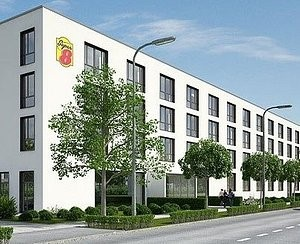

Plan putovanja Minhen:
DAN 1 - MARIENPLATZ
Marienplatz, smešten u srcu Minhena, već vekovima služi kao glavni trg i centar gradskih dešavanja. Osnovan u 12. veku, trg je dobio ime po Mariensaule, stubu posvećenom Blaženoj Devici Mariji, koji je podignut 1638. godine u znak zahvalnosti za kraj švedske okupacije tokom Tridesetogodišnjeg rata. Marienplatz je kroz vekove bio središte svih važnijih gradskih događaja, od srednjovekovnih turnira do savremenih proslava.
DAN 2 - NYMPHENBURG PALATA
Nymphenburg Palata, ili Schloss Nymphenburg, smeštena je u zapadnom delu Minhena i predstavlja jedan od najlepših primeraka barokne arhitekture u Nemačkoj. Izgradnja palate započela je 1664. godine po nalogu Ferdinanda Marije i njegove supruge Henriette Adelaide od Savoje, u čast rođenja njihovog sina Maksimilijana II Emanuela. Tokom vekova, palata je proširivana i dodatno uređivana, postajući omiljeno letnje prebivalište bavarskih vladara. Palata Nymphenburg je poznata po svojoj raskošnoj arhitekturi i bogato ukrašenim enterijerima.
DAN 3 - ALLIANZ ARENA
Alijanc arena je jedan od najmodernijih stadiona na svetu smešten u severnom delu Minhena. Dva profesionalna fudbalska kluba iz Minhena igraju kao domaćini na ovom stadionu, FK Bajern Minhen i FC TSV 1860 Minhen. Izgrađen je zajedničkim snagama gradskih rivala. Troškovi gradnje iznosili su 340 miliona eura. Zaštitni znak stadiona su 2.784 osvetljena vazdušna jastuka koji se nalaze na spoljašnjem delu. Stadion je otvoren 30. maja 2005. kada je TSV Minhen 1860 odigrao prijateljsku utakmicu sa FK Nirnbergom, a sledećeg dana je Bajern igrao protiv nemačke reprezentacije. Ima kapacitet od 75.024 mesta.
REZERVACIJA PUTOVANJA

Avio aranžman:
Autobus aranžman:
Izvršite rezervaciju